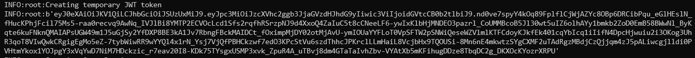

Quickstart for OpenTestFactory Orchestrator¶
Add an OpenTestFactory Orchestrator workflow to an existing repository in 5 minutes or less.
Introduction¶
You only need an existing OpenTestFactory Orchestrator service to create and run a workflow. In this guide, you will add a workflow that run tests using the robotframework/robot action. The workflow uses Robotframework to run a set of tests in an existing execution environment.
Installation¶
-
Prepare a Robotframework execution environment
docker run -d \ --name robotenv \ --env PASSWORD_ACCESS=true \ --env USER_NAME=otf \ --env USER_PASSWORD=secret \ squashtest/agent-robotframework:latest -
Prepare an OpenTestFactory Orchestrator that is linked to this execution environment
docker run -d \ --name orchestrator \ --link=robotenv \ -p 7774:7774 \ -e SSH_CHANNEL_HOST=robotenv \ -e SSH_CHANNEL_USER=otf \ -e SSH_CHANNEL_PASSWORD=secret \ -e SSH_CHANNEL_TAGS=ssh,linux,robotframework \ -e SSH_CHANNEL_PORT=2222 \ squashtest/squash-orchestrator:latest -
Get the generated token
docker logs orchestrator | grep --after-context=10 "Creating temporary JWT token"Your token will be displayed, surrounded by quotes:

In this example, the token starts with
eyJand ends withRPU. It will be different for you.
Create your first workflow¶
-
Clone the
robotframework/RobotDemorepository from GitHub.git clone https://github.com/robotframework/RobotDemo.git -
In this repository, create a new file at the top named
Squashfile. For more information, refer to your git documentation.cd RobotDemo touch Squashfile -
Copy the following YAML content in the
Squashfilefile.metadata: name: RobotFramework Example variables: SERVER: production jobs: # Set the job key. The key is displayed as the job name when # a job name is not provided keyword-driven: runs-on: robotframework steps: - run: echo $SERVER - uses: actions/checkout@v2 with: repository: https://github.com/robotframework/RobotDemo.git - uses: robotframework/robot@v1 with: datasource: RobotDemo/keyword_driven.robot -
To run your workflow, run the following command, replacing
<yourtoken>by the token you got at installation time.curl -X POST \ --data-binary @Squashfile \ -H "Authorization: Bearer <yourtoken>" \ -H "Content-type: application/x-yaml" \ http://localhost:7774/workflows
The orchestrator will then execute your workflow.
View your workflow results¶
-
Check the logs of the orchestrator. This is a place where you observe your workflow executions.
docker logs orchestrator
In a more realistic case, you would upload your tests execution reports to either a test management system or a shared directory.
More workflow templates¶
The OpenTestFactory provides preconfigured workflow templates that you can customize to create your own testing workflows.
You can browse the full list of workflow templates in the opentestfactory/templates repository.
Next steps¶
The robotframework workflow you just added can be integrated in your CI/CD toolchain to run any time code is pushed to your repository to help you spot errors and inconsistencies in your code. But this is only the beginning of what you can do with the OpenTestFactory orchestrator. Your repository can contain multiple workflows that trigger different jobs based on different events. The orchestrator can help you automate nearly every aspect of your applicating test processes. Ready to get started? Here are some helpful resources for taking your next steps with the OpenTestFactory orchestrator:
- “Learn OpenTestFactory Orchestrator” for an in-depth tutorial
- “Guides” for specific uses cases and examples
- robotframework/robot for more details about configuring the Robotframework action